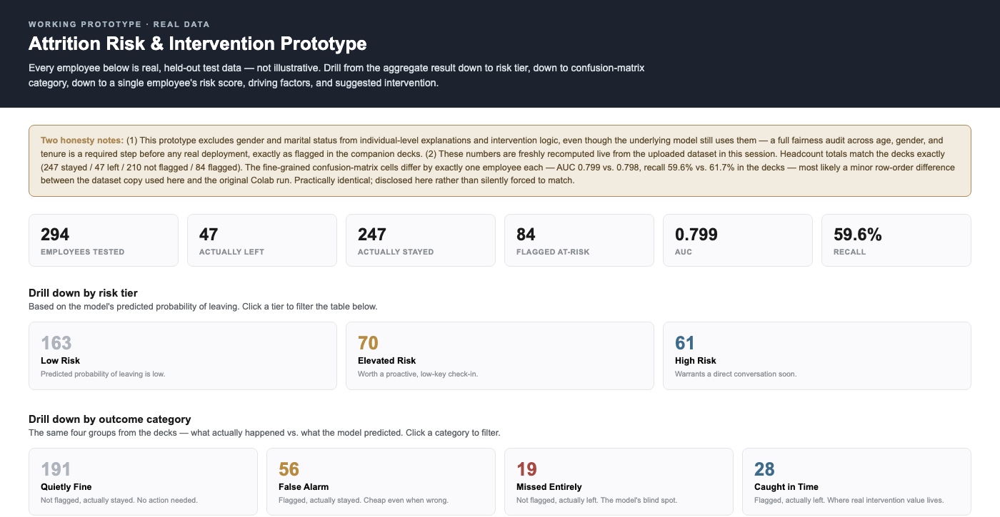
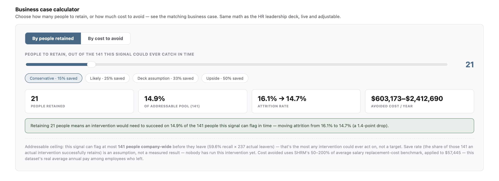
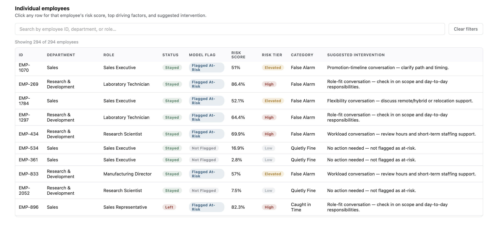

Flight risk only showed up after the exit interview — once the decision to leave was already final, leaving no room for intervention.
Attrition ran at 16.1% — 237 of 1,470 employees — and HR only learned who was at risk from a quarterly report or a resignation letter, after the decision was already made and replacement cost was already in motion. I built a model that scores every employee's flight risk and matches each one to the right response, before they hand in notice — catching 6 in 10 leavers early enough to act.
WhoHR business partnerDecides where to focus limited retention effort across the team.
WhatKnow who's at risk, and what to do about itA risk score per employee, matched to a specific intervention — before they resign.
Why6 in 10 caught, each with a matched response61.7% of actual leavers flagged in time — and routed to the right intervention, not a blanket one.
Two things that were broken
Found out after the fact
Attrition showed up in a quarterly report or an exit interview — after the decision to leave was already made and replacement cost was already in motion.
Accuracy was the wrong yardstick
A model that predicts "everyone stays" is 84% accurate and catches nobody. Optimizing for accuracy would have missed exactly the people worth catching.
What we changed
Designed a response for every risk tierA quiet check-in at low risk, a real retention conversation in the middle, escalation to manager and HR when risk and value are both high — never a blanket action.
Scores every employee, continuouslyReplaces after-the-fact discovery with a live risk score for every employee, not just the ones who already gave notice.
Proven on people it had never seenTested on 294 employees held back from training — the score holds up on people the model has never met.
Explains itselfHR sees the risk tier, the suggested action, and why the model flagged that person — never just an unexplained number.

The live prototype — real held-out employees, scored and sorted into Quietly Fine, False Alarm, Missed Entirely, and Caught in Time.

The live prototype — real held-out employees, scored and sorted into Quietly Fine, False Alarm, Missed Entirely, and Caught in Time.

The live prototype — real held-out employees, scored and sorted into Quietly Fine, False Alarm, Missed Entirely, and Caught in Time.
The model flags the risk. A person decides whether to intervene — before the decision to leave becomes final.
What it moved
6 in 10
Leavers flagged before they resigned
61.7% recall · a "stays" guess catches 0%
1 in 3
Flags that turn out to be real
34.5% precision · the rest are just a quick check-in
Dataset: IBM HR Analytics Employee Attrition (Kaggle) · 1,470 employees. Trained on an 80/20 stratified split, so the same 16.1% attrition rate held in both the training data and the 294 held-out test employees the model never saw.